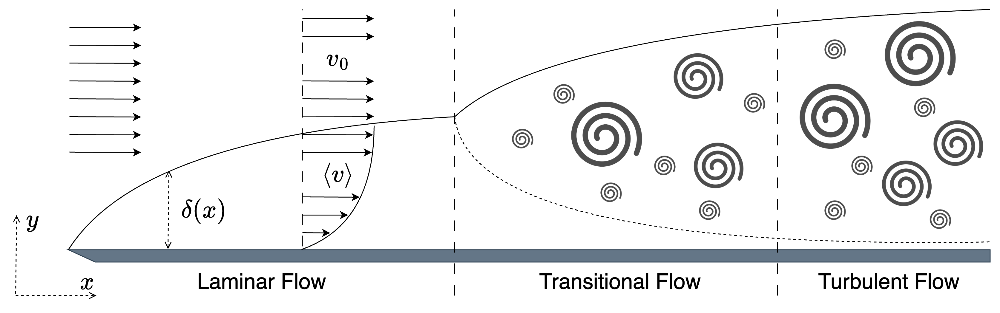
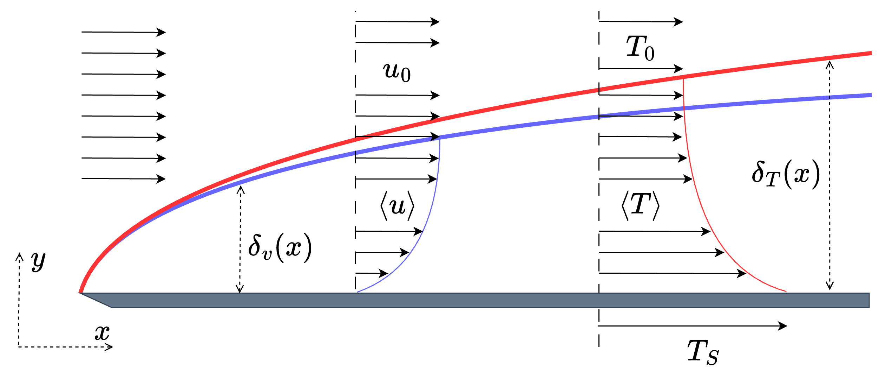
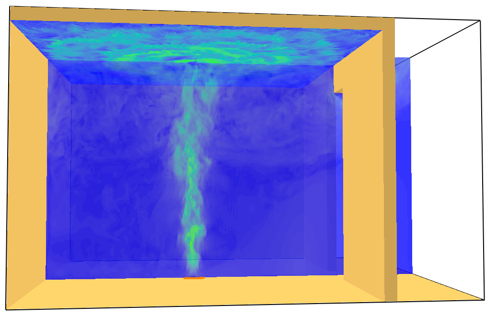
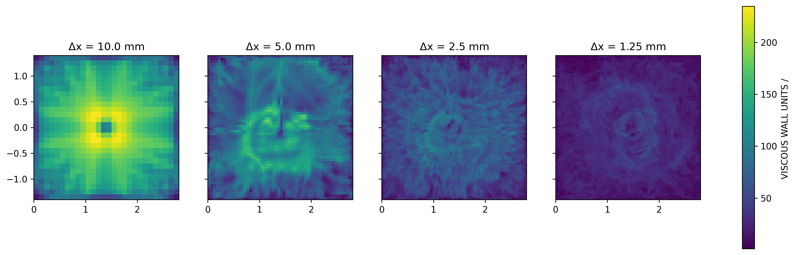
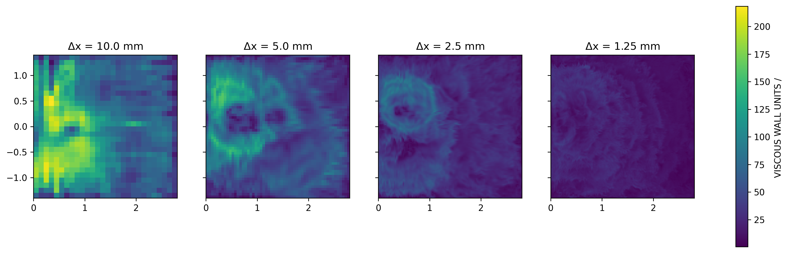
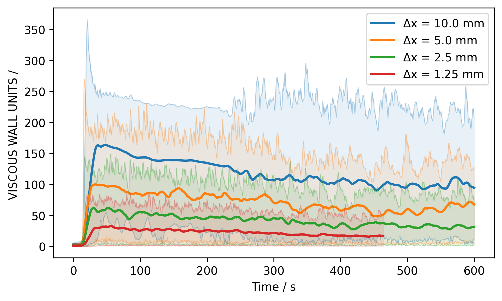
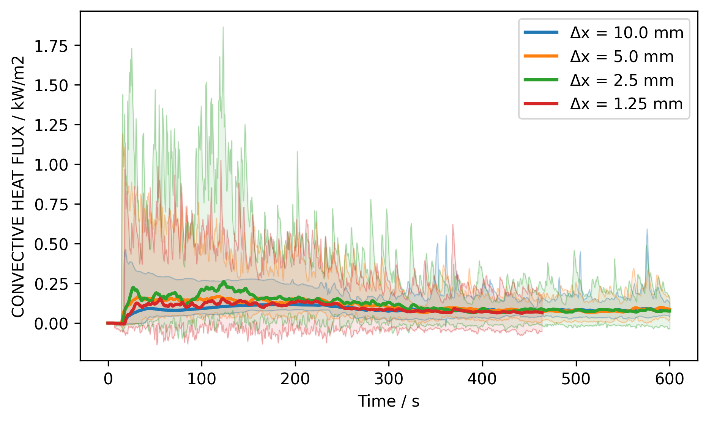
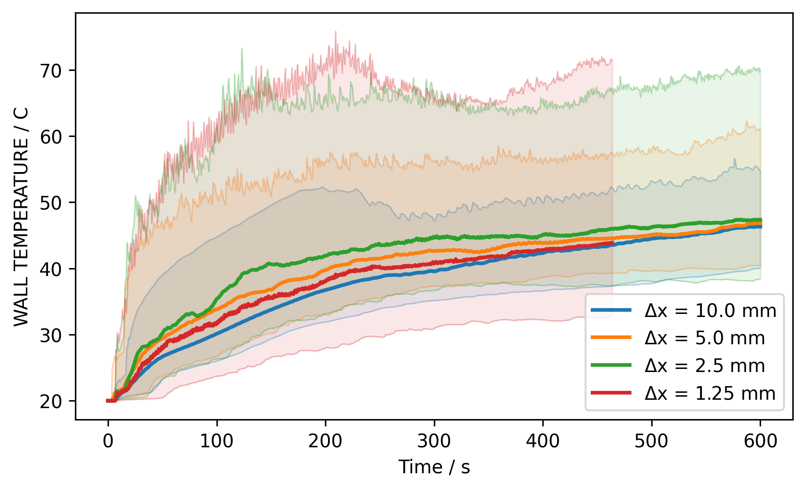

Boundary Layers
Demonstration of a Boundary Layer
Source: YouTube
Structure of a Boundary Layer

Viscous Scales
Note: adjust consistent writing, e.g. \(u\) vs. \(v\)
In the region near the wall, the shear stress is only due to the viscous part:
\[ \tau_w = \left. \rho \nu \left( \frac{\text{d}\langle u \rangle}{\text{d}y}\right)\right|_{y=0} \]
The velocity scale (friction velocity)
\[ u_\tau \equiv \sqrt{\frac{\tau_w}{\rho}} \]
and the length scale (viscous lengthscale)
\[ \delta_\nu \equiv \nu \sqrt{\frac{\rho}{\tau_w}} = \frac{\nu}{u_\tau} \]
Scaling
Based on the viscous sclaes, velocity and distance is scaled as
\[ u^+ \equiv \frac{\langle u \rangle}{u_\tau} \quad \text{and} \quad y^+ \equiv \frac{y}{\delta_\nu} \]
Note: add plot with \(u^+\) as a function of \(y^+\)
\(u^+\) vs \(y^+\)

Law of the Wall
In FDS, two pproximations for the law of the wall, i.e. \(u^+ = f(y^+)\), in the inner layer (\(y < 0.1\delta\)) are used:
Close to the wall, i.e. \(y^+ \leq 11.81\), \[ u^+ = y^+ \]
and further away, i.e. \(y^+ \geq 11.81\):
\[ u^+ = \frac{1}{\kappa}\ln(y^+) + B \quad \text{with} \quad \kappa=0.41, \, B=5.2 \]
Wall Regions

Wall Regions
- Inner Layer – velocity profile depends only on \(u_\tau\) and \(y^+\), but not on \(u_0\) and \(\delta\)
- Viscous Wall Region – significant viscous contribution to the shear stress
- Viscous Sublayer – viscous stress is dominating
- Outer Layer – no direct impact of viscosity on velocity profile
- Log-law Region – approximation of log-law valid
Wall Roughness
So far, smooth walls have been assumed. The impact of a wall with a roughness \(s\) can be included in the law of the wall as
\[ u^+ = \frac{1}{\kappa} \ln\left( \frac{y}{s} \right) + \tilde{B}(s^+) \]
with the scaled roughness \(s^+ = s / \delta_\nu\) and \(y = \Delta y / 2\). The parameter \(\tilde{B}\) is given as
\[ \tilde{B} = \begin{cases} B + (1/\kappa) \ln(s^+) & \text{for } s^+ < 5.83 \\ \tilde{B}_{\text{max}} & \text{for } 5.83 \leq s^+ < 30.0 \\ B_2 & \text{for } s^+ \geq 30.0 \end{cases} \]
with \(B_2=8.5\) and \(\tilde{B}_{\text{max}} = 9.5\).
Thermal Boundary Layer

Prandtl Number (Pr)
The Prandtl number (Pr) is defined as the ratio of momentum to thermal diffussivity (\(\alpha\)):
\[ Pr = \frac{\nu}{\alpha} = \frac{c_p\, \mu}{k} \quad \text{with} \quad \alpha = \frac{k}{c_p \rho} \]
with the thermal conductivity \(k\).
Regimes:
- \(Pr \ll 1\), e.g. liquid metals, thermal diffusivity dominates
- \(Pr \approx \mathcal{O}(1)\), e.g. gases, balance of both processes
- \(Pr \gg 1\), e.g. oils, thermal diffusivity is negligible
Boundary Layer Thickness
Boundary layer thickness for the velocity \(\delta_v(x)\) can be estimated with \(Re_x = u_0\, x / \nu\) by:
\[ \delta_v(x)_{\text{laminar}} \approx 5.0 \cdot x \cdot Re_x^{-\frac{1}{2}} \] \[ \delta_v(x)_{\text{turbulent}} \approx 0.37 \cdot x \cdot Re_x^{-\frac{1}{5}} \]
Using Pr, the thermal boundary thickness can be related to the velocity in a laminar flow:
\[ \delta_T(x)_{\text{laminar}} = \delta_v(x)_{\text{laminar}} \cdot Pr_x^{-\frac{1}{3}} \]
In the tublulent case, the thermal boundary thickness does not depend on the thermal diffusion, but only on the flow properties (Re): \[ \delta_T(x)_{\text{turbulent}} \approx \delta_v(x)_{\text{turbulent}} \]
Convective Heat Transfer
In general, the convective heat transfer is dependent on the temperature gradient in the wall normal direction (\(\partial T / \partial n\)) and thermal conductivity:
\[ \dot{q}''_c = -k \frac{\partial T}{\partial n} \]
In DNS simulations, this gradient can be directly estimated as
\[ \dot{q}''_c = -k \frac{T_w - T_g}{\delta n / 2} \]
with the wall surface (\(T_w\)) and the gas temperature (\(T_g\)) at the first gas cell, with a normal cell width \(\delta n\).
Empirical Convection Models
If, like in LES, the gradient can not be computed, empirical corelations can be used to compute the convective heat transfer via a heat transfer coefficient \(h\):
\[ \dot{q}_c'' = h (T_g - T_w) \]
This coefficient can be estimated with the Nusselt number (Nu) by
\[ h = \frac{k}{L} \max \left( \text{Nu}_{\text{free}}, \text{Nu}_{\text{forced}}\right) \]
In FDS, the characteristic length is chosen as \(L=1 m\).
Nusselt Number (Nu) – Free Flow
The Nusselt number (Nu) is the ratio of the total heat transfer to the conductive heat transfer at a boundary. For various configurations, follwoing correlations for the free flow:
\[ \text{Nu}_{\text{free}} = \left\{ \begin{array}{ll} \left( 0.825 + 0.324 \, \text{Ra}^{1/6} \right)^2 & \text{Vertical plate or cylinder} \\ 0.54 \, \text{Ra}^{1/4} & \text{Horizontal hot plate facing up, } Ra \leq 10^7 \\ 0.15 \, \text{Ra}^{1/3} & \text{Horizontal hot plate facing up, } Ra > 10^7 \\ 0.52 \, \text{Ra}^{1/5} & \text{Horizontal hot plate facing down} \\ \left( 0.60 + 0.321 \, \text{Ra}^{1/6} \right)^2 & \text{Horizontal cylinder} \\ 2 + 0.454 \, \text{Ra}^{1/4} & \text{Sphere} \end{array} \right. \]
With the Rayleigh number (Ra) defined as
\[ \text{Ra} = \frac{2g \left| T_g - T_w \right| L^3}{(T_g + T_w) \nu \alpha} \]
Nusselt Number (Nu) – Forced Flow
In case of a forced flow, the Nusselt number is a function of Re and Pr:
\[ \text{Nu}_{\text{forced}} = C_0 + \left( C_1 \text{Re}^n - C_2 \right) \text{Pr}^{\frac{1}{3}} \]
With the coefficients \(C_0\), \(C_1\), \(C_2\) and \(n\) depending on the geometry and Re.
Temperature Scaling
As with the velocity boundary layer, the temperature difference between the gas phase (\(T_g\)) and the wall surface temperature (\(T_w\)) can be scaled as
\[ T^+ = \frac{T_g - T_w}{T_\tau} \]
The used model for \(T^+\) as a function of \(y^+\) is
\[ T^+ = Pr\, y^+ \quad \text{for}\quad y^+ \leq 11.81 \]
and
\[ T^+ = \frac{Pr_t}{\kappa}\ln(y^+) + B_T(Pr) \quad \text{with} \quad \text{for}\quad y^+ \leq 11.81 \]
Near-wall Model for Heat Transfer Coefficient
The temperature scale is defined as
\[ T_\tau \equiv \frac{\dot{q_c}''}{\rho\, c_p \, u_\tau} \]
With this, the heat transfer coefficent \(h\) can be rearranged to
\[ h = \frac{\dot{q_c}''}{T_g - T_w} = \frac{\rho\, c_p \, u_\tau}{T^+} \]
Exercise – Heat Transfer to Compartment Ceiling
Description: Stecker compartment.

Exercise – Tasks
- Run the provided input file (steckler.fds).
- Visualise the boundary data.
Exercise – Results

t = 100 s
Exercise – Results

t = 300 s
Exercise – Results

t = 500 s
Exercise – Results

Exercise – Results

Exercise – Results

Exercise – Results
